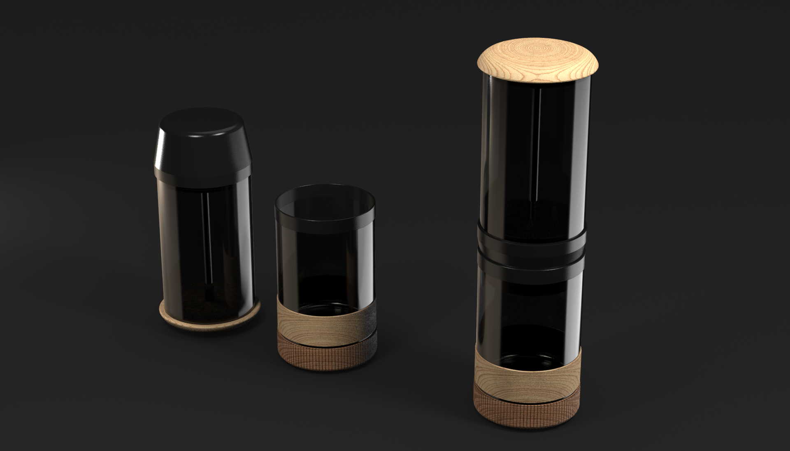

Tarrazu
Tarrazu es un homenaje a la cultura cafetalera costarricense. Este diseño captura la esencia del paisaje montañoso y la calidez de la tradición cafetera.
Tarrazu es un homenaje a la cultura cafetalera costarricense. Este diseño captura la esencia del paisaje montañoso y la calidez de la tradición cafetera.